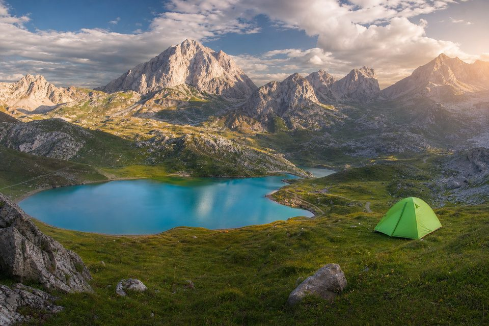
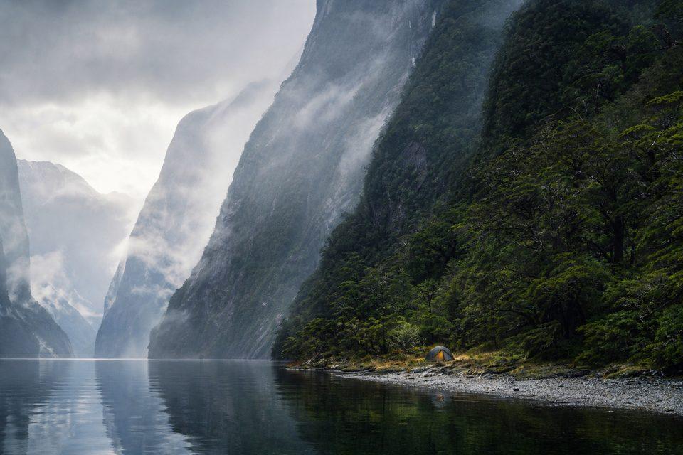
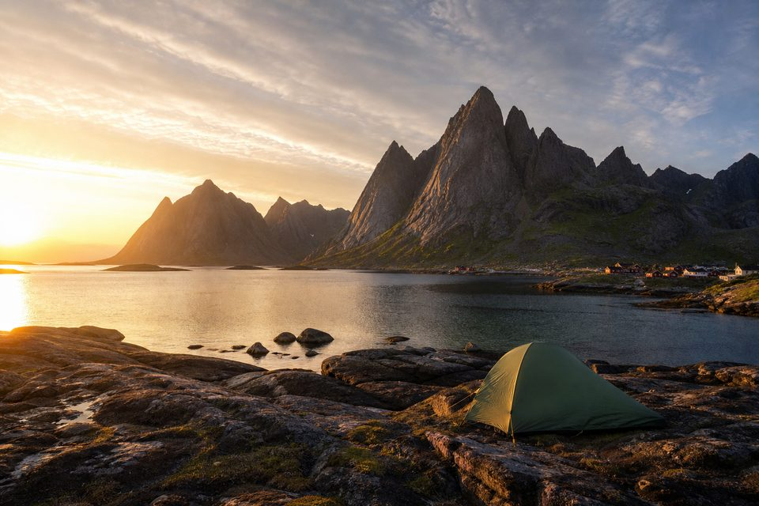

Turismo de acampada · Naturaleza
Tu próxima escapada empieza aquí
Directorio de campings en España con mapa GPS, pozas y ríos escondidos, y rutas de senderismo para planificar la escapada. Solo destinos que merecen la pena.
Acceso rápido
¿Qué quieres planificar?
Tres puertas de entrada a la aventura: pernocta, baño en naturaleza o ruta a pie.

Directorio
Mejores campings
11 campings en mapa GPS (Ordesa, Salou, El Chorro…) y 29 guías internacionales con consejos prácticos.
Abrir directorio →
Agua y calma
Pozas y ríos escondidos
Charcas, pozas y tramos de río para refrescarte después de la ruta o combinar con una noche de camping.
Ver naturaleza →
Trekking
Rutas de senderismo imprescindibles
Itinerarios de fin de semana y travesías clásicas enlazados con campings y puntos de agua cercanos.
Ver rutas →Selección editorial